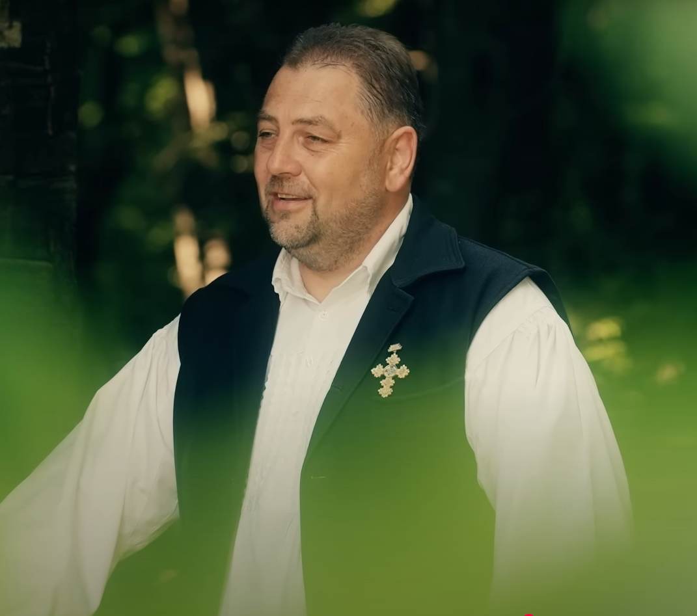
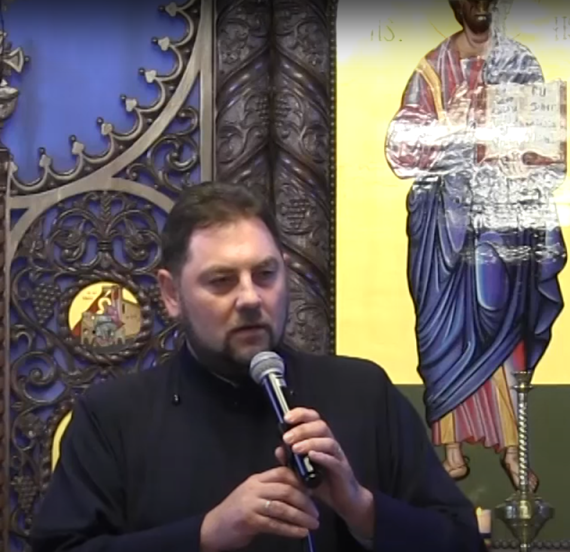

Rădăcina caldă a sufletului românesc, Colindele nu se cântă, se trăiesc.

Nu toate cântecele mele vin din trecut. Unele s-au născut din realitățile zilelor noastre. Sunt mărturii, versuri care ating teme grele - pierderea, căutarea, rătaăcirea și le transformă în cântece pentru inimă.

Pricesnele nu sunt doar cântece, sunt strigătul blând al sufletului spre Dumnezei.
Aleg colaborările, nu după nume sau faimă, ci după adevăr șsi suflet curat, iar fiecare piesă scoasă cu alt artist spune o poveste care merită auzită, o poveste ce unește două lumi.